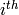

В Sage есть исчерпывающая встроенная документация, к которой можно получить доступ, напечатав имя функции или константы с последующим вопросительным знаком:
sage: tan?
Type: <class 'sage.calculus.calculus.Function_tan'>
Definition: tan( [noargspec] )
Docstring:
The tangent function
EXAMPLES:
sage: tan(pi)
0
sage: tan(3.1415)
-0.0000926535900581913
sage: tan(3.1415/4)
0.999953674278156
sage: tan(pi/4)
1
sage: tan(1/2)
tan(1/2)
sage: RR(tan(1/2))
0.546302489843790
sage: log2?
Type: <class 'sage.functions.constants.Log2'>
Definition: log2( [noargspec] )
Docstring:
The natural logarithm of the real number 2.
EXAMPLES:
sage: log2
log2
sage: float(log2)
0.69314718055994529
sage: RR(log2)
0.693147180559945
sage: R = RealField(200); R
Real Field with 200 bits of precision
sage: R(log2)
0.69314718055994530941723212145817656807550013436025525412068
sage: l = (1-log2)/(1+log2); l
(1 - log(2))/(log(2) + 1)
sage: R(l)
0.18123221829928249948761381864650311423330609774776013488056
sage: maxima(log2)
log(2)
sage: maxima(log2).float()
.6931471805599453
sage: gp(log2)
0.6931471805599453094172321215 # 32-bit
0.69314718055994530941723212145817656807 # 64-bit
sage: sudoku?
File: sage/local/lib/python2.5/site-packages/sage/games/sudoku.py
Type: <type 'function'>
Definition: sudoku(A)
Docstring:
Solve the 9x9 Sudoku puzzle defined by the matrix A.
EXAMPLE:
sage: A = matrix(ZZ,9,[5,0,0, 0,8,0, 0,4,9, 0,0,0, 5,0,0,
0,3,0, 0,6,7, 3,0,0, 0,0,1, 1,5,0, 0,0,0, 0,0,0, 0,0,0, 2,0,8, 0,0,0,
0,0,0, 0,0,0, 0,1,8, 7,0,0, 0,0,4, 1,5,0, 0,3,0, 0,0,2,
0,0,0, 4,9,0, 0,5,0, 0,0,3])
sage: A
[5 0 0 0 8 0 0 4 9]
[0 0 0 5 0 0 0 3 0]
[0 6 7 3 0 0 0 0 1]
[1 5 0 0 0 0 0 0 0]
[0 0 0 2 0 8 0 0 0]
[0 0 0 0 0 0 0 1 8]
[7 0 0 0 0 4 1 5 0]
[0 3 0 0 0 2 0 0 0]
[4 9 0 0 5 0 0 0 3]
sage: sudoku(A)
[5 1 3 6 8 7 2 4 9]
[8 4 9 5 2 1 6 3 7]
[2 6 7 3 4 9 5 8 1]
[1 5 8 4 6 3 9 7 2]
[9 7 4 2 1 8 3 6 5]
[3 2 6 7 9 5 4 1 8]
[7 8 2 9 3 4 1 5 6]
[6 3 5 1 7 2 8 9 4]
[4 9 1 8 5 6 7 2 3]
Sage также предоставляет возможность ‘Заполнения’: напечатайте несколько первых букв названия функции и нажмите tab. Например, если напечатать ta и нажать TAB, Sage выведет tachyon, tan, tanh, taylor. Данная функция является хорошим способом поиска имен функций или других конструкций в Sage.
Для того, чтобы определить функцию в Sage, используйте команду def и двоеточие после списка имен переменных:
sage: def is_even(n):
... return n%2 == 0
...
sage: is_even(2)
True
sage: is_even(3)
False
Заметка: В зависимости от версии учебного пособия на второй строке этого примера можно увидеть .... Не печатайте их, так как они служат лишь для того, чтобы показать отступы в коде.
Не определяйте типов аргументов. Можно определить несколько видов ввода, аргументы которых могут иметь значения по умолчанию. Например, функция в следующем примере использует divisor=2, если divisor не задан.
sage: def is_divisible_by(number, divisor=2):
... return number%divisor == 0
sage: is_divisible_by(6,2)
True
sage: is_divisible_by(6)
True
sage: is_divisible_by(6, 5)
False
Также можно подробно задавать ввод при вызове функции. Если задавать параметры подробно, порядок не важен:
sage: is_divisible_by(6, divisor=5)
False
sage: is_divisible_by(divisor=2, number=6)
True
В Python блоки кода не отделяются фигурными скобками или другими обозначениями, как в других языках. Вместо этого используются отступы. Например, следующее выдаст синтаксическую ошибку, так как перед return нет такого же количества отступов, как в предыдущих строках.
sage: def even(n):
... v = []
... for i in range(3,n):
... if i % 2 == 0:
... v.append(i)
... return v
Syntax Error:
return v
Если добавить отступы, функция будет работать:
sage: def even(n):
... v = []
... for i in range(3,n):
... if i % 2 == 0:
... v.append(i)
... return v
sage: even(10)
[4, 6, 8]
Точки с запятой не нужны на концах строк. Можно расположить несколько утверждений на одной строке, отделенных точками с запятой:
sage: a = 5; b = a + 3; c = b^2; c
64
Если требуется расположить строку кода на нескольких строках, используйте \:
sage: 2 + \
... 3
5
В Sage счетчики производят инерации по интервалу целых чисел. Например, первая строчка в примере означает то же самое, что for(i=0; i<3; i++) в C++ или Java:
sage: for i in range(3):
... print i
0
1
2
Первая строчка в следующем примере эквивалентна for(i=2;i<5;i++).
sage: for i in range(2,5):
... print i
2
3
4
Третий аргумент задает шаг. Следующее эквивалентно for(i=1;i<6;i+=2).
sage: for i in range(1,6,2):
... print i
1
3
5
Часто требуется создать таблицу для вывода чисел, посчитанных в Sage. Легкий способ - использовать форматирование строк. Ниже создается таблица с тремя столбцами шириной 6, содержащая таблицу квадратов и кубов:
sage: for i in range(5):
... print '%6s %6s %6s'%(i, i^2, i^3)
0 0 0
1 1 1
2 4 8
3 9 27
4 16 64
Самым базовым типом данных в Sage является список - набор различных объектов. Например, команда range создаст список:
sage: range(2,10)
[2, 3, 4, 5, 6, 7, 8, 9]
Далее показан пример более сложного списка:
sage: v = [1, "hello", 2/3, sin(x^3)]
sage: v
[1, 'hello', 2/3, sin(x^3)]
Индексы в списке начинаются с нуля, как во многих языках программирования.
sage: v[0]
1
sage: v[3]
sin(x^3)
Используйте len(v) для того, чтобы получить длину v; v.append(obj) для того, чтобы прикрепить новый объект к концу v, и del v[i], чтобы удалить элемент  из v:
sage: len(v)
4
sage: v.append(1.5)
sage: v
[1, 'hello', 2/3, sin(x^3), 1.50000000000000]
sage: del v[1]
sage: v
[1, 2/3, sin(x^3), 1.50000000000000]
Другой очень важный тип данных - словарь (или ассоциативный массив). Он работает, как список, но может быть индексирован почти любым объектом (индексы должны быть неизменимыми):
sage: d = {'hi':-2, 3/8:pi, e:pi}
sage: d['hi']
-2
sage: d[e]
pi
Также можно определить новый тип данных с использованием классов. Инкапсулирование математических объектов в классах - это мощная техника, которая может помочь упростить и организовать программы в Sage. Ниже показан пример класса, который состоит из списка положительных четных целых чисел до n; он получен из встроенного типа list.
sage: class Evens(list):
... def __init__(self, n):
... self.n = n
... list.__init__(self, range(2, n+1, 2))
... def __repr__(self):
... return "Even positive numbers up to n."
Метод __init__ вызывается для инициализации объекта при его создании; метод __repr__ выведет все объекты. Конструктор списка вызывается во второй строчке метода __init__. Объект класса Evens создается в следующем виде:
sage: e = Evens(10)
sage: e
Even positive numbers up to n.
Заметьте, что e выводится с помощью метода __repr__, который был задан нами. Для просмотра списка чисел используйте функцию list:
sage: list(e)
[2, 4, 6, 8, 10]
Можно обратиться к аттрибуту n или использовать e как список.
sage: e.n
10
sage: e[2]
6